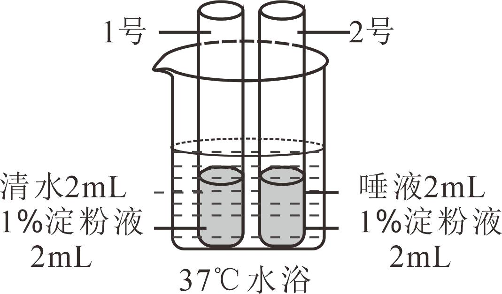

2023年北京中考生物 第9题 解析
9. 同学们按下图所示进行实验，一段时间后向两支试管中分别滴加碘液，观察颜色变化。下列叙述错误的是（ ）

A. 目的是探究唾液对淀粉的消化作用B. 试管中的液体需要充分混合均匀
C. 水浴温度为37℃，模拟了人体体温D. 2号试管溶液的蓝色比1号试管的深
【答案】D
【解析】
【分析】（1）唾液腺的开口在口腔，唾液腺能分泌唾液，唾液中含有唾液淀粉酶，能够将淀粉初步消化为麦芽糖。
（2）淀粉遇到碘液会变蓝，麦芽糖遇到碘液不会变蓝。
（3）酶的活性受温度的影响，高温可能会使酶失去活性，低温会使酶的活性受到抑制，在37℃左右唾液淀粉酶的催化作用最强。
【详解】A．本实验中1号试管加入了清水、2号试管加入了唾液，其他条件相同且适宜。因此，这俩个试管能够形成以唾液为变量的一组对照实验，目的是探究唾液对淀粉的消化作用，A正确。
B．对照试验遵循单一变量原则，以便排除偶然因素 影响。该实验中的唯一变量是唾液，其他条件应该相同且适宜，因此试管中的液体需要充分混合均匀，B正确。
影响。该实验中的唯一变量是唾液，其他条件应该相同且适宜，因此试管中的液体需要充分混合均匀，B正确。
C．酶的活性受温度的影响，温度过高会使酶丧失活性，温度过低会抑制酶的活性，而在37℃左右唾液淀粉酶的催化作用最强。因此实验过程中，应将实验装置放在37℃的水中进行水浴加热。这是模拟人体的口腔温度，为了保证唾液淀粉酶的活性，如此实验才能成功，C正确。
D．实验中，1号试管加入了清水，水不能将淀粉分解，因此该试管中有淀粉存在，滴加碘液后变蓝。实验中，2号试管加入了唾液，唾液中的唾液淀粉酶将淀粉全部分解为麦芽糖，麦芽糖遇碘液不变蓝，因此该试管滴加碘液后不变蓝，D错误。
故选D。